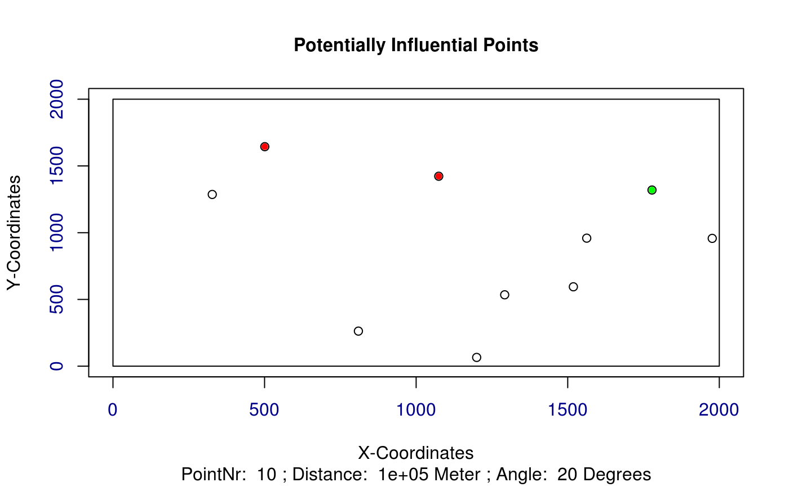

Calculate distances and angles of possibly influencing turbines
get_dist_angles.RdCalculate distances and angles for a turbine and all it's potentially influencing turbines.
get_dist_angles(t, o, wkl, distanz, polYgon, plotAngles)
Arguments
| t | A matrix of the current individual with x and y coordinates |
|---|---|
| o | A numeric value indicating the index of the current turbine |
| wkl | A numeric value indicating the angle, at which no wake influences are considered. Default is 20 degrees. |
| distanz | A numeric value indicating the distance, after which the wake effects are considered to be eliminated. Default is 100km. |
| polYgon | A shapefile representing the considered area |
| plotAngles | A logical variable, which is used to plot the distances and angles. Default is FALSE |
Value
Returns a matrix with the distances and angles of potentially influencing turbines
See also
Other Wind Energy Calculation Functions: barometric_height,
calculate_energy,
turbine_influences
Examples
library(sp) library(raster) ## Exemplary input Polygon with 2km x 2km: polYgon <- Polygon(rbind(c(0, 0), c(0, 2000), c(2000, 2000), c(2000, 0))) polYgon <- Polygons(list(polYgon),1) polYgon <- SpatialPolygons(list(polYgon)) Projection <- "+proj=laea +lat_0=52 +lon_0=10 +x_0=4321000 +y_0=3210000 +ellps=GRS80 +towgs84=0,0,0,0,0,0,0 +units=m +no_defs" proj4string(polYgon) <- CRS(Projection); plot(polYgon, axes = TRUE)## Create a random windfarm with 10 turbines t <- as.matrix(cbind(x = runif(10, 0, raster::extent(polYgon)[2]), y = runif(10, 0, raster::extent(polYgon)[4]))) wnkl <- 20 distanz <- 100000 ## Evaluate and plot for every turbine all other potentially influencing turbines potInfTur <- list() for (i in 1:(length(t[,1]))) { potInfTur[[i]] <- get_dist_angles(t = t, o = i, wkl = wnkl, distanz = distanz, polYgon = polYgon, plotAngles = TRUE) }potInfTur#> [[1]] #> Ax Ay Bx By Cx Cy Laenge_C Laenge_B Laenge_A alpha betha gamma #> [1,] 0 0 752.6253 990.5418 0 0 0 0 0 0 0 0 #> #> [[2]] #> Ax Ay Bx By Cx Cy Laenge_C Laenge_B Laenge_A alpha betha gamma #> [1,] 0 0 1421.737 1569.725 0 0 0 0 0 0 0 0 #> #> [[3]] #> Ax Ay Bx By Cx Cy Laenge_C Laenge_B #> [1,] 1421.737 1569.7254 1654.25 387.6769 1421.737 387.6769 1204.6993 1182.0485 #> [2,] 1621.693 967.1846 1654.25 387.6769 1621.693 387.6769 580.4216 579.5078 #> [3,] 1435.379 1158.3276 1654.25 387.6769 1435.379 387.6769 801.1285 770.6508 #> [4,] 1891.930 1590.1596 1654.25 387.6769 1891.930 387.6769 1225.7474 1202.4828 #> Laenge_A alpha betha gamma #> [1,] 232.51245 11.12818 78.87183 90 #> [2,] 32.55725 3.21555 86.78445 90 #> [3,] 218.87061 15.85495 74.14506 90 #> [4,] 237.68005 11.18083 78.81917 90 #> #> [[4]] #> Ax Ay Bx By Cx Cy Laenge_C Laenge_B Laenge_A alpha betha gamma #> [1,] 0 0 631.0421 775.6717 0 0 0 0 0 0 0 0 #> #> [[5]] #> Ax Ay Bx By Cx Cy Laenge_C Laenge_B #> [1,] 1421.737 1569.725 1621.693 967.1846 1421.737 967.1846 634.8522 602.5407 #> Laenge_A alpha betha gamma #> [1,] 199.9552 18.35859 71.64141 90 #> #> [[6]] #> Ax Ay Bx By Cx Cy Laenge_C Laenge_B Laenge_A alpha betha gamma #> [1,] 0 0 124.0311 898.6037 0 0 0 0 0 0 0 0 #> #> [[7]] #> Ax Ay Bx By Cx Cy Laenge_C Laenge_B #> [1,] 1421.737 1569.725 1435.379 1158.328 1421.737 1158.328 411.6238 411.3977 #> Laenge_A alpha betha gamma #> [1,] 13.64185 1.899212 88.10079 90 #> #> [[8]] #> Ax Ay Bx By Cx Cy Laenge_C Laenge_B Laenge_A alpha betha gamma #> [1,] 0 0 1891.93 1590.16 0 0 0 0 0 0 0 0 #> #> [[9]] #> Ax Ay Bx By Cx Cy Laenge_C Laenge_B #> [1,] 1421.737 1569.725 1232.473 481.7785 1421.737 481.7785 1104.2867 1087.9468 #> [2,] 1435.379 1158.328 1232.473 481.7785 1435.379 481.7785 706.3212 676.5491 #> Laenge_A alpha betha gamma #> [1,] 189.2643 9.868679 80.13132 90 #> [2,] 202.9061 16.694693 73.30531 90 #> #> [[10]] #> Ax Ay Bx By Cx Cy Laenge_C Laenge_B Laenge_A alpha betha gamma #> [1,] 0 0 440.4216 946.9851 0 0 0 0 0 0 0 0 #>